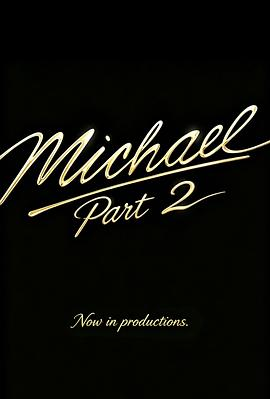

迈克尔·杰克逊：巨星之路2 / Michael Part 2
又名：迈克尔·杰克逊 第二部分 / Michael 2
我就说怎么没头没尾的，原来是还有第二部。。。。。。传记电影还能来个第二部，也是牛
作品信息
| 导演 | 安东尼·福奎阿 |
| 编剧 | 约翰·洛根 |
| 主演 | 贾法尔·杰克逊 / 科尔曼·多明戈 / 迈尔斯·特勒 / 卡特琳娜·格兰厄姆 / 尼娅·朗 / 劳拉·哈里尔 / 杰西卡·苏拉 / 拉伦兹·泰特 / 德里克·卢克 / 肯德里克·桑普森 / 凯林·多瑞尔·琼斯 |
| 类型 | 剧情 / 音乐 / 传记 |
| 制片国家/地区 | 美国 |
| 语言 | 英语 |
| 上映日期 | 2027(未定) |
| IMDb | tt43750913 |
说过什么
2026-07-05 10:24:26
广播 · 想看
我就说怎么没头没尾的，原来是还有第二部。。。。。。传记电影还能来个第二部，也是牛
最后一次看到是 2026-08-07T18:36:36+10:00 · 豆瓣原页